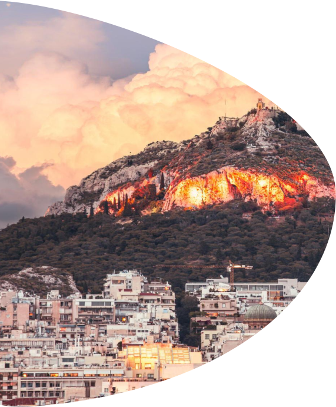
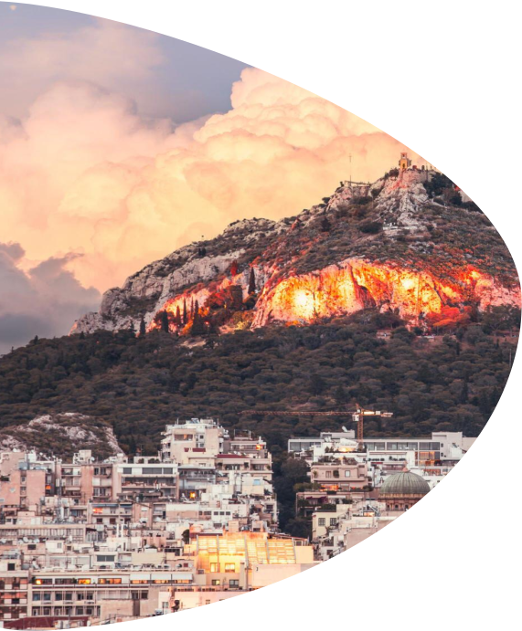
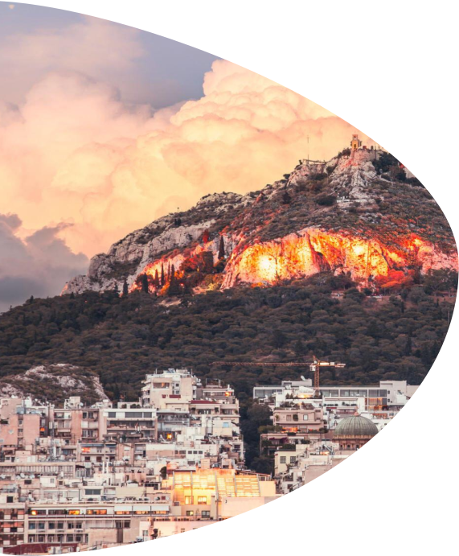

КРУИЗ ПО СРЕДИЗЕМНОМУ МОРЮ С ОТПРАВЛЕНИЕМ ИЗ СТАМБУЛА
Познакомиться с актуальном маршруте по Средиземному морю с отправлением из Генуя, Италии можно по ссылке .
Здесь же рассматриваем круиз по Средиземному морю с отправлением из Стамбула.
ИНФОРМАЦИЯ О ТУРЕ
ВИЗА
ШЕНГЕН
(при необходимости откроем вам визу под круиз)
ТУР АКТУАЛЕН
с 13.06.2024
по
20.09.2024
СТОИМОСТЬ
от 2550€ за 2 взрослых
(сборы и питание включены)
ПРОДОЛЖИТЕЛЬНОСТЬ ТУРА
10
дней
ЛАЙНЕР
MSC Splendida
КАКИЕ СТРАНЫ И ГОРОДА ПОСЕТИТЕ
Стамбул (Турция)
о. Корфу (Греция)
Бари (Италия)
Триест (Италия)
Катаколон (Греция, в 35 км до Олимпии)
Пирей (Греция , в 10 км до Афин)
Кушадасы (Турция, в 22 км до Эфеса)
МАРШРУТ КРУИЗА
1
день
2
день
3
день
4
день
5
день
6
день
7
день
8
день
9
день
10
день

Стамбул, Турция
Данный круизный тур по Средиземному Морю начнется в Стамбуле, колоритном городе на Босфоре. Лайнер отплывает из порта поздно вечером в 23:00.
Стамбул – мост между двумя континентами, где восточная экзотика сочетается с западной строгостью. Город, пропитанный историей, где тысячелетия искусства и культуры переплетаются с современностью, создавая уникальный характер города.
Что посмотреть:
Голубая мечеть, Собор Св. Софии, Гранд-базар, Босфорский мост и пролив, Галатская башня. район Каракёй, бульвар Истикляль.
День в море
Сегодня вы проведете день в море. Ваш круизный лайнер MSC Splendida уверенно движется в направлении к Адриатическому морю, чтобы доставить Вас на встречу новым приключениям и ярким незабываемым впечатлениям. А пока Вы можете ознакомиться с богатой инфраструктурой на борту. Лайнер MSC Splendida оснащен 4 бассейнами и водной горкой, спа, казино, караоке-клубом, 4D-кинотеатром и мини-боулингом, на борту ежедневно проводятся шоу в стиле мюзиклов и другие развлекательные программы.
о. Корфу, Греция
В 13:00 третьего дня вашего круизного путешествия Вы окажетесь в невероятно красивом месте, жемчужине Ионических островов – на острове Корфу.
Корфу встретит Вас красивейшими пляжами с золотистым песком и изумрудными водами, а узкие улочки старого города пригласят на прогулку среди вековых зданий и площадей. Корфу богат своей историей, здесь есть замки, крепости и венецианские дворцы. Но Корфу — это не только о культурном богатстве, а о природном очаровании: высокие горы и масличные рощи создают умиротворяющую картину, от которой невозможно оторвать взгляд. Успейте насладиться спокойствие и размерностью местной жизнь до 21:00.
Что посмотреть:
дворец и музей Ахиллион, монастырь Пантократор на горе, бухта Палеокастрица, столица Керкира, канал Любви (Canal de Amour).
Бари, Италия
Уже в 7 утра выглянув из окна каюты Вы увидите новое чарующее место. Сегодня круизный лайнер доставил Вас в Бари. Бари – это портовый город на юге Италии, где царит гармония между изысканной архитектурой, теплым морем и восхитительной едой. Бари зачаровывает своим средиземноморским колоритом и богатой историей.
Отправление круизного лайнера в 14:00.
Что посмотреть:
старый город Бари, восьмиугольный замок Кастель-дель-Монте, Норманнский замок, «трулли» (сказочных белых домиков с конусообразными крышами), церковь св. Николая с мощами святого, скальный город Матера.
Триест, Италия
Сегодня у Вас будет возможность открыть для себя еще один очаровательный город сказочной Италии - Триест. Лайнер прибывает в порт в 9:00 на пятый день круизного путешествия, а отправляется вечером в 19:00.
Триест — изысканный город, где чувствуется слияние итальянской, австрийской и славянской культур (Триест - приграничный город между Италией и Словенией). Триест — это культурный центр с историческим центром в венском стиле, богатыми музейными коллекциями и древнеримской архитектурой. Кроме того, здесь Вы найдете очаровательные кафе и рестораны с потрясающими видами на море, которые так и манят насладиться итальянской кулинарией и почувствовать на себе атмосферу итальянской “долче вита”.
Что посмотреть:
замок Мирамаре, театра и арки Римлян, тропа Рильке с панорамными видами, крепость Кастельо, замок и базилика Сан-Густо, Морской музей, Музей естественной истории.
День в море
Пока круизный лайнер спешит доставить Вас в следующий пункт назначения, у Вас есть возможность насладиться безмятежными пейзажами Адриатического моря и отдохнуть от экскурсионных будней в понравившемся месте или посетить что-то новое.
Катаколон, Греция
В 8 утра седьмого дня путешествия лайнер пришвартуется в Катаколон. Это небольшой портовый город, популярный среди туристов благодаря тому, что всего в 33 километрах от него находится Древняя Олимпия — родина олимпийских игр, а также одно из семи чудес света - храм Зевса.
Круизный лайнер отплывает в следующий город Греции в 16:00.
Что посмотреть:
храм Зевса (одно из семи чудес света), археологический музей Олимпии, древний олимпийский стадион, где проводились первые олимпийские игры, храм Геры.
Пирей, Греция
На восьмой день круизного тура лайнер бросит якорь в главном порте Афин, Пирее (8:00). Афины – это место, где родилась классическая Греция, колыбель демократии и философии. Город, где античные руины переплетаются с современной архитектурой, создавая неповторимый городской ландшафт.
Круизный лайнер отправляется из порта в 18:00.
Что посмотреть:
Акрополь, Парфенон, старый город Плака с пешеходными улицами, древняя Агора, Национальный Археологический музей, гора Ликабет, современные кварталы Псири и Колонаки.
Кушадасы, Турция
Последний город, который Вы посетите в рамках данного круизного путешествия, – это Кушадасы. У Вас будет пол дня, чтобы насладиться этим уютным городом (с 7:00 до 15:00).
Кушадасы — сказочный курорт на берегу Эгейского моря, спрятавшийся в живописной бухте. Он знаменит своими красивыми пляжами, колоритными рынками и уникальными историческими памятниками.
Что посмотреть:
набережная Гюзельчамлы, храм Аполлона в Дидимах, античный город Эфес, античный театр в Милете, рынок Кушадасы, пляж Ladies Beach.
Стамбул, Турция
Ваше путешествие на круизном лайнере подходит к концу. В 10 утра Вы прибудете в Стамбул. Нужно освободить каюту и покинуть корабль.
Если у Вас осталось время до обратного рейса, рекомендуем продолжить исследовать Стамбул. Например, отличной идеей будет прокатиться на пароме по Босфору и заглянуть на азиатскую часть города в районы Мода и Кадыкёй.


 
